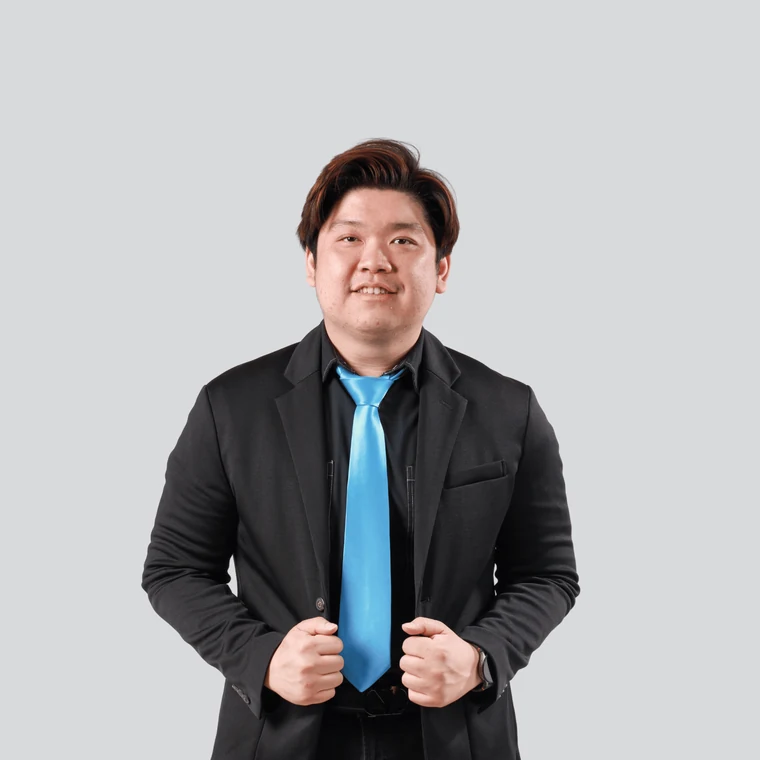

Yohan Muliono, S.Kom., M.TI.
Head of Cyber Security Program — BINUS University
Memimpin program Cyber Security di School of Computer Science · bersertifikasi CND, CEH Master & eMAPT.
Sesi LIVE 2 jam untuk memahami bagaimana AI mengubah dunia keamanan siber — langsung dari perspektif akademisi BINUS University. Kenali program Applied Cybersecurity with AI sebelum kamu mendaftar.
Kamis, 23 Juli 2026
19.00–21.00 WIB · Live via YouTube

Head of Cyber Security Program — BINUS University
Memimpin program Cyber Security di School of Computer Science · bersertifikasi CND, CEH Master & eMAPT.
Lima topik utama yang akan dikupas tuntas selama sesi LIVE bersama ahlinya.
Bagaimana AI memperluas permukaan serangan sekaligus mempercepat serangan — dan kenapa kebutuhan talenta keamanan justru ikut naik.
Lanskap ancaman dan tooling berubah tiap tahun. Cara membangun kebiasaan belajar supaya skill kamu tidak cepat usang.
Gambaran jujur soal pekerjaan sehari-hari: deteksi ancaman, triase alert, dan respons insiden — di luar mitos “hacker”.
Kombinasi skill teknis dan non-teknis yang benar-benar dicari perusahaan di Indonesia saat merekrut.
Urutan belajar yang terstruktur — dari fondasi, lab praktik, sampai portofolio dan sertifikasi yang relevan.
Sudah paham networking & dasar programming, tapi belum punya security mindset dan bukti kemampuan yang bisa ditunjukkan.
Sysadmin, network engineer, developer, atau helpdesk yang ingin beralih ke keamanan siber lebih cepat daripada kuliah lagi.
Kamu merasa cybersecurity itu penting & menjanjikan, tapi belum tahu harus mulai belajar dari mana secara terstruktur.